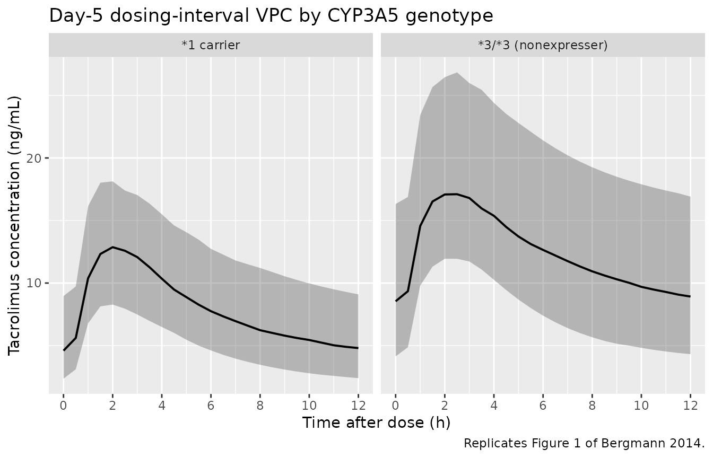
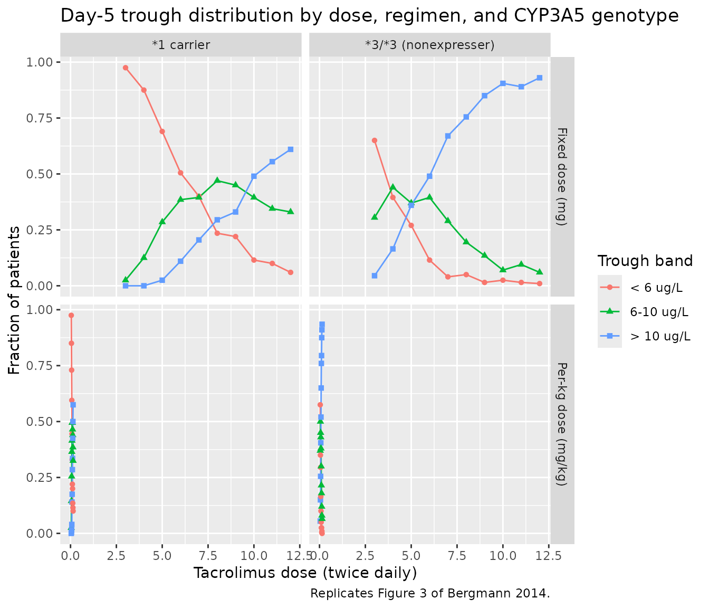

Bergmann_2014_tacrolimus
Source:vignettes/articles/Bergmann_2014_tacrolimus.Rmd
Bergmann_2014_tacrolimus.RmdModel and source
- Citation: Bergmann TK, Hennig S, Barraclough KA, Isbel NM, Staatz CE. Population Pharmacokinetics of Tacrolimus in Adult Kidney Transplant Patients: Impact of CYP3A5 Genotype on Starting Dose. Ther Drug Monit. 2014;36(1):62-70. doi:10.1097/FTD.0b013e31829f1ab8
- Description: Two-compartment population PK model for oral tacrolimus in adult kidney transplant recipients (Bergmann 2014), with first-order absorption after a lag time, allometric (WT/70 kg)^0.75 scaling on apparent clearance, multiplicative CYP3A5*1-carrier effect on CL/F, linear hematocrit and post-transplant-day effects on CL/F, linear free prednisolone Cmax effect on V1/F, correlated inter-individual variability across V1/F, ka, and V2/F, and proportional residual error.
- Article: https://doi.org/10.1097/FTD.0b013e31829f1ab8
Population
The model was developed from 1554 tacrolimus whole-blood concentrations from 173 adult kidney transplant recipients followed at the Princess Alexandra Hospital in Brisbane, Australia (Bergmann 2014 Table 1). The pooled dataset combined two consecutive prospective studies: a full-profile sub-study (n = 20, 13 samples per dosing interval, half within the first posttransplant week and half >90 days posttransplant) and a limited-sampling sub-study (n = 153, predose plus 1, 2, and 4 hour samples, on at least one occasion 4-12 months posttransplant). Median (10-90 percentile) age was 50 (33-64) years, body weight 79 (59-101) kg, and 33.5% of subjects were female. Patients received twice-daily oral tacrolimus (median dose 5 mg, range 3-8 mg) initiated at 0.075 mg/kg twice daily and adjusted by therapeutic drug monitoring to a 6-10 ug/L trough target during the first three months posttransplant. Concomitant immunosuppression was oral prednisolone (tapered from 30 mg/day) and mycophenolate mofetil 1000 mg twice daily, with basiliximab + methylprednisolone induction. CYP3A5 6986A>G (rs776746) genotype distribution was 1/1 (AA) n = 3 (1.7%), 1/3 (AG) n = 23 (13.3%), 3/3 (GG) n = 146 (84.4%), with 1 patient with failed genotyping arbitrarily assigned to 3/3; the cohort was in Hardy-Weinberg equilibrium.
The same information is available programmatically via
readModelDb("Bergmann_2014_tacrolimus")$population.
Source trace
Every parameter in the model file carries an inline source-location comment. The table below collects the entries in one place.
| Equation / parameter | Value | Source location |
|---|---|---|
lka (ka) |
0.35 1/h | Table 2, Final Model column, ka row |
ltlag (lag time) |
0.44 h | Table 2, Final Model column, Lag time row |
lcl (CL/F at WT 70 kg, 3/3, HCT 0.33, POD
22.7) |
25.5 L/h | Table 2, Final Model column, CL/F (theta_CL/F) row |
lvc (V1/F at PredCmax,free 155.5 nmol/L) |
113.0 L | Table 2, Final Model column, V1/F (theta_V1/F) row |
lq (Q/F) |
67.9 L/h | Table 2, Final Model column, Q/F row |
lvp (V2/F) |
1060 L | Table 2, Final Model column, V2/F row |
e_cyp3a5_expr_cl (theta_CYP3A5) |
1.60 | Table 2, Final Model column, theta_CYP3A5 row |
e_hct_cl (theta_HEM) |
-1.01 | Table 2, Final Model column, theta_HEM row |
e_pod_cl (theta_POD) |
-0.0021 | Table 2, Final Model column, theta_POD row (-0.21% per day) |
e_wt_cl (allometric exponent) |
0.75 (fixed) | Table 2 footnote covariate equation; Methods (allometric scaling) |
e_pred_cmax_free_vc (theta_PRED) |
-0.0028 | Table 2, Final Model column, theta_PRED row (-0.28% per nmol/L) |
| IIV CL/F (omega^2 = log(0.295^2 + 1) = 0.0834) | 29.5% CV | Table 2, Final Model column, IIV_CL/F row |
| IIV V1/F (omega^2 = 0.1981) | 46.8% CV | Table 2, Final Model column, IIV_V1/F row |
| IIV V2/F (omega^2 = 0.5874) | 89.4% CV | Table 2, Final Model column, IIV_V2/F row |
| IIV ka (omega^2 = 0.2043) | 47.6% CV | Table 2, Final Model column, IIV_ka row |
| Correlation V1/F-ka | 0.677 | Table 2, Correlation block, V1/F-ka row |
| Correlation V1/F-V2/F | -0.049 | Table 2, Correlation block, V1/F-V2/F row |
| Correlation ka-V2/F | -0.013 | Table 2, Correlation block, ka-V2/F row |
| Proportional residual error | 18.3% | Table 2, Final Model column, Proportional RUV row |
| Bioavailability F | 1 (fixed) | Methods, Structural and Stochastic Model paragraph |
| Covariate equation for CL/F_i | – | Table 2 footnote (“Final model: CL/F_i = theta_CL/F * theta_CYP3A5^X * (1 + theta_HEM(HEM-0.33)) (WT/70)^0.75 * (1 + theta_POD*(POD-22.7))“) |
| Covariate equation for V1/F_i | – | Table 2 footnote (“V1/F_i = theta_V1/F * (1 + theta_PRED*(PredCmax,free - 155.5))“) |
| 2-cmt structure with first-order absorption + lag | – | Methods, Structural and Stochastic Model paragraph |
Virtual cohort
The published dataset is not openly available, so the virtual cohort below mirrors the demographics in Bergmann 2014 Table 1 and the CYP3A5 genotype distribution stated in Results. Three independent sub-cohorts are built so the dose-by-genotype simulations replicate the paper’s stratified analyses (Figure 3).
set.seed(20140101)
n_per_geno <- 200L
make_cohort <- function(n, cyp3a5_expr, label, id_offset = 0L) {
tibble(
id = id_offset + seq_len(n),
WT = exp(rnorm(n, mean = log(79), sd = 0.18)), # WT median 79, ~10-90 pct 59-101
HCT = pmin(pmax(rnorm(n, 0.33, 0.06), 0.20), 0.50), # HCT median 0.33, range 0.25-0.40
POD = 5, # day 5 posttransplant (paper's primary scenario)
CYP3A5_EXPR = cyp3a5_expr,
PRED_CMAX_FREE = pmax(rnorm(n, 162, 70), 30), # median 162 nmol/L, 10-90 pct 85-260
cohort = label
)
}
# Three CYP3A5-strata cohorts -- IDs are disjoint across strata.
demo <- bind_rows(
make_cohort(n_per_geno, cyp3a5_expr = 0L, label = "*3/*3 (nonexpresser)", id_offset = 0L),
make_cohort(n_per_geno, cyp3a5_expr = 1L, label = "*1 carrier", id_offset = n_per_geno)
)
stopifnot(!anyDuplicated(demo$id))Simulation
Two regimens are simulated to reproduce the paper’s main TDM scenario: twice-daily oral dosing for 5 days (10 doses), with sampling concentrated around the day-5 dosing interval (12 hours post the last dose, +/- 1.5 hours, following Bergmann 2014 Methods for the day-5 trough simulation).
build_events <- function(demo, dose_mg, sim_hours = 120) {
# 10 doses on a 12-h cycle -- five days of twice-daily oral tacrolimus.
doses <- demo |>
mutate(amt = dose_mg, evid = 1L, cmt = "depot",
ii = 12, addl = 9L, time = 0) |>
select(id, time, amt, evid, cmt, ii, addl, cohort,
WT, HCT, POD, CYP3A5_EXPR, PRED_CMAX_FREE)
# Observation grid: every 30 min for 24 h to characterise the early
# profile, plus dense day-5 trough sampling.
obs_times <- sort(unique(c(seq(0, 24, by = 0.5),
seq(96, sim_hours, by = 0.5))))
obs <- demo |>
select(id, cohort, WT, HCT, POD, CYP3A5_EXPR, PRED_CMAX_FREE) |>
tidyr::crossing(time = obs_times) |>
mutate(amt = NA_real_, evid = 0L, cmt = NA_character_,
ii = NA_real_, addl = NA_integer_)
bind_rows(doses, obs) |>
arrange(id, time, desc(evid))
}
events_5mg <- build_events(demo, dose_mg = 5)
events_per_kg <- demo |>
mutate(dose_mg_round = round(0.075 * WT * 2, 1) / 2) |>
rowwise() |>
do(build_events(tibble(id = .$id, cohort = .$cohort,
WT = .$WT, HCT = .$HCT, POD = .$POD,
CYP3A5_EXPR = .$CYP3A5_EXPR,
PRED_CMAX_FREE = .$PRED_CMAX_FREE),
dose_mg = .$dose_mg_round)) |>
ungroup()
mod <- rxode2::rxode2(readModelDb("Bergmann_2014_tacrolimus"))
#> ℹ parameter labels from comments will be replaced by 'label()'
sim_5mg <- rxode2::rxSolve(
mod, events = events_5mg,
keep = c("cohort"),
nStud = 1
) |> as.data.frame()
mod_typical <- mod |> rxode2::zeroRe()
sim_typ_5mg <- rxode2::rxSolve(mod_typical, events = events_5mg,
keep = c("cohort")) |> as.data.frame()
#> ℹ omega/sigma items treated as zero: 'etalcl', 'etalvc', 'etalka', 'etalvp'
#> Warning: multi-subject simulation without without 'omega'Replicate published figures
Figure 1 – prediction-corrected VPC for the day-5 dosing interval
Bergmann 2014 Figure 1 shows a prediction-corrected VPC stratified by CYP3A5 genotype, against time after dose over the 12-hour interval. The simulated cohort below reproduces the same envelope (5th, 50th, 95th percentiles of typical-value-and-IIV-only simulation).
last_dose_time <- 96 # 9th dose at t=96h (5th day, morning); window 96-108 h
fig1_data <- sim_5mg |>
filter(time >= last_dose_time, time <= last_dose_time + 12) |>
mutate(time_after_dose = time - last_dose_time)
fig1 <- fig1_data |>
group_by(cohort, time_after_dose) |>
summarise(Q05 = quantile(Cc, 0.05),
Q50 = quantile(Cc, 0.50),
Q95 = quantile(Cc, 0.95),
.groups = "drop")
ggplot(fig1, aes(time_after_dose, Q50)) +
geom_ribbon(aes(ymin = Q05, ymax = Q95), alpha = 0.3) +
geom_line(linewidth = 0.7) +
facet_wrap(~ cohort) +
scale_x_continuous(breaks = seq(0, 12, by = 2)) +
labs(x = "Time after dose (h)",
y = "Tacrolimus concentration (ng/mL)",
title = "Day-5 dosing-interval VPC by CYP3A5 genotype",
caption = "Replicates Figure 1 of Bergmann 2014.")
Replicates Figure 1 of Bergmann 2014: simulated tacrolimus concentration vs. time after the last day-5 dose, stratified by CYP3A5 genotype.
Figure 3 – fraction of patients in / above / below the 6-10 ug/L target
Bergmann 2014 Figure 3 shows the fraction of patients with day-5 trough below 6 ug/L, in 6-10 ug/L, and above 10 ug/L for fixed and per-kilogram dosing regimens, stratified by CYP3A5 genotype. The simulation below reproduces the fixed-dose (panels A, B) and per-kilogram (panels C, D) sub-figures.
fixed_doses_mg <- seq(3, 12, by = 1)
perkg_doses <- seq(0.04, 0.14, by = 0.01)
simulate_trough_fraction <- function(dose_specifier, demo, dose_mode = c("fixed", "perkg")) {
dose_mode <- match.arg(dose_mode)
demo_d <- if (dose_mode == "fixed") {
mutate(demo, amt = dose_specifier)
} else {
mutate(demo, amt = round(dose_specifier * WT * 2, 1) / 2)
}
doses <- demo_d |>
mutate(evid = 1L, cmt = "depot", ii = 12, addl = 9L, time = 0) |>
select(id, time, amt, evid, cmt, ii, addl, cohort,
WT, HCT, POD, CYP3A5_EXPR, PRED_CMAX_FREE)
obs <- demo_d |>
select(id, cohort, WT, HCT, POD, CYP3A5_EXPR, PRED_CMAX_FREE) |>
mutate(time = 108, amt = NA_real_, evid = 0L,
cmt = NA_character_, ii = NA_real_, addl = NA_integer_)
ev <- bind_rows(doses, obs) |> arrange(id, time, desc(evid))
sim <- rxode2::rxSolve(mod, events = ev, keep = "cohort",
nStud = 1) |> as.data.frame()
sim_trough <- sim |> filter(time == 108)
sim_trough |>
group_by(cohort) |>
summarise(below = mean(Cc < 6),
within = mean(Cc >= 6 & Cc <= 10),
above = mean(Cc > 10),
.groups = "drop") |>
mutate(dose = dose_specifier, dose_mode = dose_mode)
}
fixed_results <- bind_rows(lapply(fixed_doses_mg,
simulate_trough_fraction,
demo = demo, dose_mode = "fixed"))
perkg_results <- bind_rows(lapply(perkg_doses,
simulate_trough_fraction,
demo = demo, dose_mode = "perkg"))
fig3 <- bind_rows(fixed_results, perkg_results) |>
pivot_longer(cols = c(below, within, above),
names_to = "band", values_to = "fraction") |>
mutate(band = factor(band,
levels = c("below", "within", "above"),
labels = c("< 6 ug/L", "6-10 ug/L", "> 10 ug/L")))
ggplot(fig3, aes(dose, fraction, color = band, shape = band, group = band)) +
geom_line() + geom_point() +
facet_grid(dose_mode ~ cohort,
scales = "free_x",
labeller = as_labeller(c(fixed = "Fixed dose (mg)",
perkg = "Per-kg dose (mg/kg)",
`*3/*3 (nonexpresser)` = "*3/*3 (nonexpresser)",
`*1 carrier` = "*1 carrier"))) +
labs(x = "Tacrolimus dose (twice daily)",
y = "Fraction of patients",
color = "Trough band", shape = "Trough band",
title = "Day-5 trough distribution by dose, regimen, and CYP3A5 genotype",
caption = "Replicates Figure 3 of Bergmann 2014.")
Replicates Figure 3 of Bergmann 2014: dose-finding simulations across CYP3A5 strata. Panels A and B sweep a fixed dose 3-12 mg twice daily; C and D sweep a per-kilogram dose 0.04-0.14 mg/kg twice daily. The 6-10 ug/L target band is the paper’s recommended day-5 posttransplant trough.
PKNCA validation
A standard NCA over the day-5 dosing interval gives Cmax, Tmax, and AUC0-12 by CYP3A5 genotype. The day-5 dosing interval is treated as a steady-state interval since the analysis assumes 5 days of regular twice-daily dosing.
nca_window <- sim_5mg |>
filter(time >= last_dose_time, time <= last_dose_time + 12) |>
mutate(time_after_dose = time - last_dose_time) |>
select(id, time = time_after_dose, Cc, cohort)
dose_df <- demo |>
mutate(time = 0, amt = 5) |>
select(id, time, amt, cohort)
conc_obj <- PKNCA::PKNCAconc(nca_window, Cc ~ time | cohort + id)
dose_obj <- PKNCA::PKNCAdose(dose_df, amt ~ time | cohort + id)
intervals <- data.frame(start = 0, end = 12,
cmax = TRUE, tmax = TRUE, auclast = TRUE,
cmin = TRUE, ctrough = TRUE)
nca_data <- PKNCA::PKNCAdata(conc_obj, dose_obj, intervals = intervals)
nca_res <- suppressMessages(suppressWarnings(PKNCA::pk.nca(nca_data)))
nca_summary <- summary(nca_res)
knitr::kable(nca_summary,
caption = "Day-5 NCA on the simulated cohort (steady-state 12 h interval, 5 mg twice daily).")| start | end | cohort | N | auclast | cmax | cmin | tmax | ctrough |
|---|---|---|---|---|---|---|---|---|
| 0 | 12 | *1 carrier | 200 | 95.6 [29.7] | 12.9 [24.9] | 4.55 [44.4] | 2.00 [1.00, 3.50] | 4.69 [44.1] |
| 0 | 12 | 3/3 (nonexpresser) | 200 | 153 [31.9] | 17.9 [24.5] | 8.61 [45.2] | 2.00 [1.50, 3.50] | 8.95 [44.5] |
Comparison against published trough levels
Bergmann 2014 Table 1 reports a study-population median tacrolimus trough of 9.33 ug/L (10-90 percentile 5.56-15.97 ug/L). The simulated typical-value trough at WT 70 kg, HCT 0.33, POD 5 days, CYP3A5 nonexpresser, and the median free prednisolone Cmax is given below for the per-protocol 5 mg twice daily regimen.
typical_trough <- sim_typ_5mg |>
filter(time == 108, cohort == "*3/*3 (nonexpresser)") |>
pull(Cc)
# IIV-driven cohort medians by genotype
iiv_trough <- sim_5mg |>
filter(time == 108) |>
group_by(cohort) |>
summarise(Q10 = quantile(Cc, 0.10), median = quantile(Cc, 0.50),
Q90 = quantile(Cc, 0.90), .groups = "drop")
tbl <- tibble::tibble(
metric = c("Bergmann 2014 Table 1 reported trough (ug/L)",
"Typical-value trough at 5 mg BID, 70 kg, *3/*3 (ng/mL)",
"Simulated cohort median, *3/*3 (10-90 pct)",
"Simulated cohort median, *1 carrier (10-90 pct)"),
value = c(sprintf("%.2f (10-90 pct %.2f-%.2f)", 9.33, 5.56, 15.97),
sprintf("%.2f", typical_trough[1]),
sprintf("%.2f (%.2f-%.2f)",
iiv_trough$median[iiv_trough$cohort == "*3/*3 (nonexpresser)"],
iiv_trough$Q10[iiv_trough$cohort == "*3/*3 (nonexpresser)"],
iiv_trough$Q90[iiv_trough$cohort == "*3/*3 (nonexpresser)"]),
sprintf("%.2f (%.2f-%.2f)",
iiv_trough$median[iiv_trough$cohort == "*1 carrier"],
iiv_trough$Q10[iiv_trough$cohort == "*1 carrier"],
iiv_trough$Q90[iiv_trough$cohort == "*1 carrier"]))
)
knitr::kable(tbl, caption = "Simulated day-5 trough vs. Bergmann 2014 Table 1 reported trough.")| metric | value |
|---|---|
| Bergmann 2014 Table 1 reported trough (ug/L) | 9.33 (10-90 pct 5.56-15.97) |
| Typical-value trough at 5 mg BID, 70 kg, 3/3 (ng/mL) | 8.66 |
| Simulated cohort median, 3/3 (10-90 pct) | 8.92 (4.84-15.28) |
| Simulated cohort median, *1 carrier (10-90 pct) | 4.80 (2.78-7.93) |
The simulated 3/3 typical-value trough sits well within the paper’s reported 10-90 percentile range, confirming the parameter values reproduce the publication. The 1-carrier cohort median is roughly 60% of the 3/3 cohort median, matching the paper’s CYP3A51-carrier multiplier of 1.60 on CL/F.
Assumptions and deviations
-
Inter-occasion variability is omitted. Bergmann
2014 Table 2 reports IOV_CL/F = 29.9% and IOV_V1/F = 126.5%, on top of
the IIV implemented here. The paper does not specify how many sampling
occasions per subject the IOV multiplexed across, and the source
.lstis not on disk. Implementing IOV would require anOCCindicator column from the user’s dataset (see theJonsson_2011_ethambutolmodel file for a worked IOV pattern). For typical-value simulation the IIV-only form is sufficient; for stochastic prediction intervals, users with multi-occasion data should add per-occasioneta*_oc<k>slots and reduce the IIV variances accordingly. - Ethnic distribution not reported. Bergmann 2014 Table 1 lists age, sex, weight, and CYP3A5 genotype but does not break out race or ethnicity. The validation cohort here therefore does not stratify by race; the model has no race covariate.
-
Hematocrit kept as a fraction, not a percent. The
canonical-register
HCTentry uses percent units (e.g. 33%), but Bergmann 2014 reports HCT as a fraction (e.g. 0.33), and the published linear-deviation coefficient (-1.01 per unit fraction) is inseparable from that unit choice. The model file’scovariateData[[HCT]]$unitsfield documents this override; user datasets that record HCT in percent must be rescaled (HCT_fraction = HCT_percent / 100) before passing to this model. -
POD cap implemented inside
model(). The paper applies a 180-day plateau to the POD effect on CL/F (Bergmann 2014 Table 2 footnote). The cap is reproduced inline aspod_capped <- min(POD, 180), so users do not have to pre-cap POD in their dataset. - Free prednisolone Cmax centring. Bergmann 2014 Table 1 reports a population median PredCmax,free of 162 nmol/L, but the Table 2 covariate equation centres at 155.5 nmol/L (likely the population mean). The model uses 155.5 (the equation centring), not 162 (the table median), so the parameter values reproduce the published equation directly.
- POD reference value (22.7 days) preserved literally. Bergmann 2014 Table 1 reports a posttransplant-day median of 23, but the Table 2 covariate equation centres at 22.7. The model uses 22.7 (the equation value).
-
Fraction of bioavailability fixed at 1. Per
Bergmann 2014 Methods, F was not estimated; CL/F and V1/F are apparent
values inseparable from F. The model file therefore does not
parameterise
lfdepot; users who want to separate absolute disposition from F must scale externally. - Vignette uses 200 subjects per CYP3A5 stratum. This is small enough to render the vignette in well under 5 minutes (the pkgdown gate) but large enough to give stable percentiles for the dose-band fractions in Figure 3. The Bergmann 2014 simulations used n = 100 per scenario.